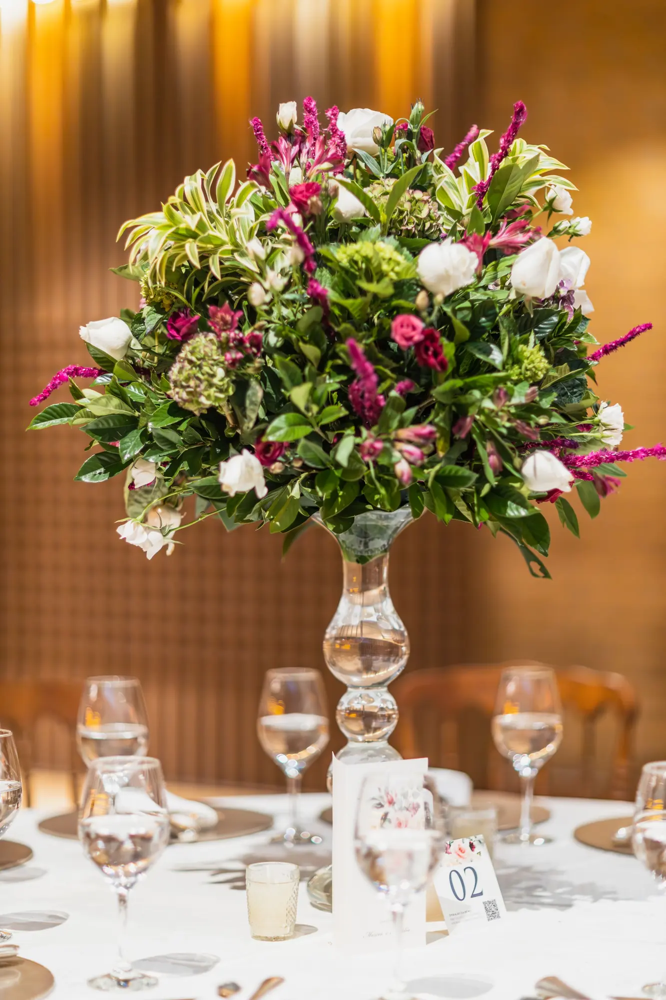

Una fecha
Comparte cuándo lo necesitas y qué quieres expresar.
Hay fechas que piden un gesto pensado con cariño. Cuéntanos la ocasión y consulta qué opciones florales podrían acompañarla.

Imagen de bancoUna celebración, un agradecimiento o un momento importante puede inspirar una composición diferente. La web actual menciona arreglos personalizados y decoración floral para bodas y eventos; habla con la floristería para concretar qué puede realizarse.
Hay fechas que merecen florecer.
Comparte cuándo lo necesitas y qué quieres expresar.
Colores, formato y estilo pueden orientar la conversación.
La disponibilidad y las condiciones se confirman directamente.


Una celebración se recuerda por las personas; las flores ayudan a construir el ambiente donde sucede.
Las flores han acompañado rituales y celebraciones durante generaciones. En la web de Siempre Vive se ofrecen ramos de novia, arreglos de boda, decoración de eventos sociales y corporativos, además de creaciones personalizadas. La propuesta cambia según el espacio, la fecha y lo que quieras comunicar; la disponibilidad siempre debe confirmarse.
Cuenta fecha, lugar, tipo de ocasión, piezas deseadas y paleta. Una fotografía puede ayudar a explicar el estilo.
Comparte el presupuesto orientativo y pregunta por flores de temporada o alternativas si alguna variedad no está disponible.
En ramos cortados, jarrón limpio, tallos en agua y un lugar fresco lejos del sol directo hasta su uso.
Confirma con la floristería cómo se transportará, colocará y conservará cada arreglo; no todos los centros tienen las mismas necesidades.
Si te llevas las flores a casa, pregunta qué piezas pueden ponerse en agua y cuáles requieren otro mantenimiento.
Boda, aniversario o evento de empresa: el uso y el lugar definen tamaño, resistencia y tipo de arreglo.
Fecha, horario, ubicación, número aproximado de piezas, estilo, colores, presupuesto y si habrá transporte o montaje.
Confirma plazos con la tienda. Las especies de temporada y la disponibilidad condicionan la composición final.
Si son tallos cortados, mantenlos en agua limpia y fresco, lejos del sol. Pide instrucciones propias para espuma floral o montaje especial.
En mesas de invitados, evita piezas que interrumpan la vista. Para accesos o rincones amplios, una pieza alta puede crear un punto focal.
Avisa antes de escoger especies y ubicación. Los lirios son tóxicos para gatos; comprueba también estabilidad de jarrones y velas.
Pregunta si parte del montaje puede trasladarse a jarrones al terminar. No todas las estructuras se desmontan igual.
La flor o planta cambia un espacio cuando su tamaño, luz y función se tienen en cuenta.
Una composición baja acompaña sin robar protagonismo a las personas.
Una pieza más escultórica anuncia el ambiente desde el primer momento.
Flores y luz pueden construir un fondo sin bloquear circulación.
Elige escala y perfume acordes con un espacio de uso diario.
Escríbenos con tu idea para consultar disponibilidad y detalles. Las fotografías son de inspiración y no representan productos disponibles en tienda.